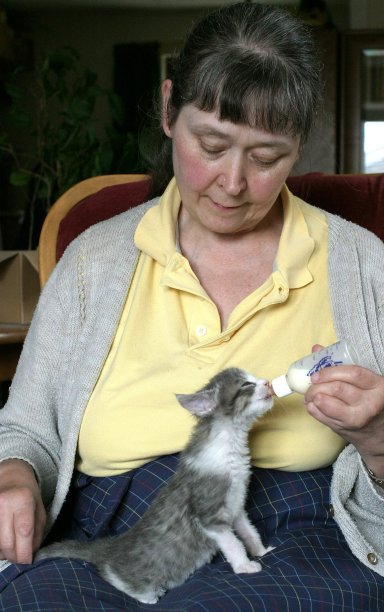

~~~~~~~~~~~~~~~~~~~~~~~~~~~~~
|
|
What is there to say? Let's see. Well, I'm female, British, in my mid '50s, have a passion for cats (I'm a foster-carer for the local Rescue Centre and if you're interested I have a site about my little ones here ), a love of reading (particularly humour), and an obsession with hex editing for all of the P.F.Magic range of games. I have every single one of the Petz games, plus Oddballz and Babyz, including the different versions (Mac Oddballz, International Petz 3 etc). I've hex-edited loads of stuff for them over the years, starting back in 1995 with Dogz original. You edit the dogz breedfiles in Notepad, they are just simple text files -- and I spotted that the later games have these text files too, just stuck together with a load of other stuff in large resource files, which is why I've always extracted them and edited them the way I do. I believe that information should be freely available, plus I want others to enjoy my hobby as much as I do, which is why I started to post "howto" messages back on the old Usenet newsgroups years ago. Abby wrote to me and suggested that I gather them together and make tutorials, and the rest (as they say) is history. I also believe that in a hobby such as ours, where we make and share add-ons for our favourite games, we should do so freely and with joy. I never can understand the bickering that goes on about so much, including copyright, in our community. We edit the programmers' original files without a by-your-leave, so why should we be upset when others fiddle with our own files? All that is needed is a suitable acknowledgement of our own work. Outright theft in a community like ours is another thing I cannot understand -- after all, what is the pleasure in taking something that someone else made and displaying it as your own? Do I do anything else? Well, yes -- it's been a full, rich life so far and I spent many years of it in interesting places outside the U.K. I've written some short stories for a satirical magazine, and a couple of novels -- humorous fantasy/SF, probably not suitable for youngsters -- which are available for reading somewhere on the Internet. I've dabbled in editing stuff in the various Creatures games, and somewhere out there are my c307 genomes which used Slink's excellent c306 as base. Startopia -- I modded some stuff for that, currently up at Slink's site along with my deep delvings into the original Sims game files. Oh, and Aquazone -- a couple of edited files of mine and a "howto" are floating around the Internet somewhere. But it's always the P.F.Magic series that I come back to, and hex-editing their files that gives me most of my computerised fun.  a |